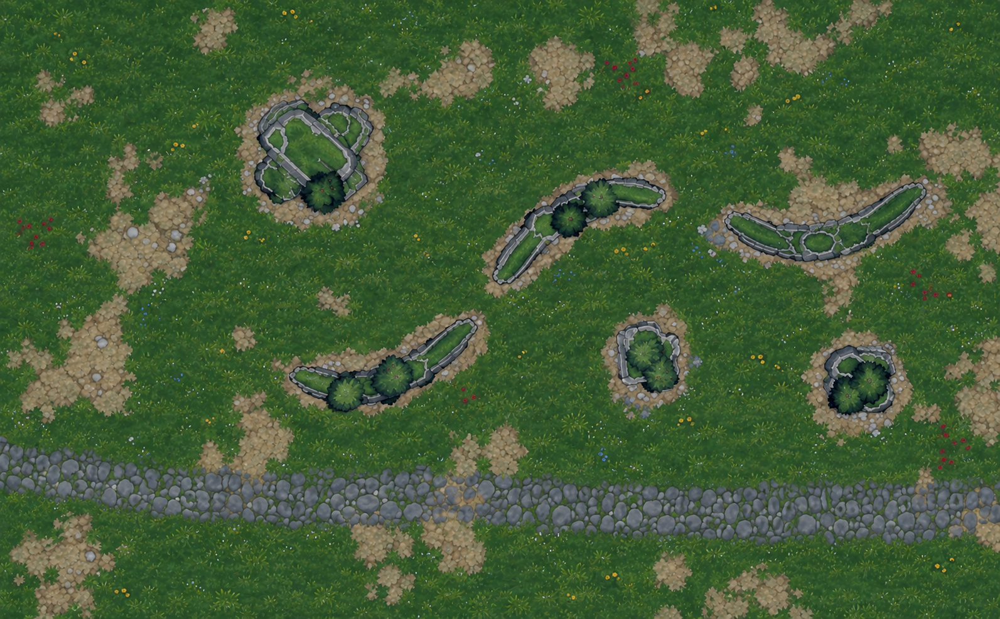

035 · 원본 직접 참조 · 미술 기준 시안
원본 맵과 새 대표 구역 비교
왼쪽 위의 잔해 6개와 돌길을 같은 위쪽 시점으로 봅니다. 오른쪽은 새로 생성한 기준 시안이며 Unity 화면이나 정확한 배치 도면이 아닙니다.
원본 x100–520 / y100–360 · 색 보정·재생성 없음

넓은 녹색 상부 · 낮은 불규칙 석재 테두리 · 연결된 자갈길
원본과 시안의 위치·크기 대조
원본은 왼쪽, 새 시안은 오른쪽입니다. 손잡이를 움직여 차이를 확인하세요. 생성 시안의 좌표를 구현 데이터로 쓰지 않습니다.
전체 지도에서 이 영역을 골랐습니다
- 큰 둥근 잔해 1개
- 서로 다른 굽은 잔해 3개
- 작은 둥근 잔해 2개
- 하부 가로 자갈길과 왼쪽 마른 흙길
높이·충돌·지나갈 수 있는 영역은 원본 외형만으로 확정하지 않습니다.
기존 Unity 시험 화면
55도 카메라와 다른 화면 범위입니다. 원본과의 정밀 배치 비교용이 아니라, 회색 덩어리 위주의 기존 형태를 확인하는 기록입니다.

이전 모델과 기능 검증 기록은 보존합니다. 이 화면을 신규 잔해의 형태·재질 기준으로 재사용하지 않습니다.